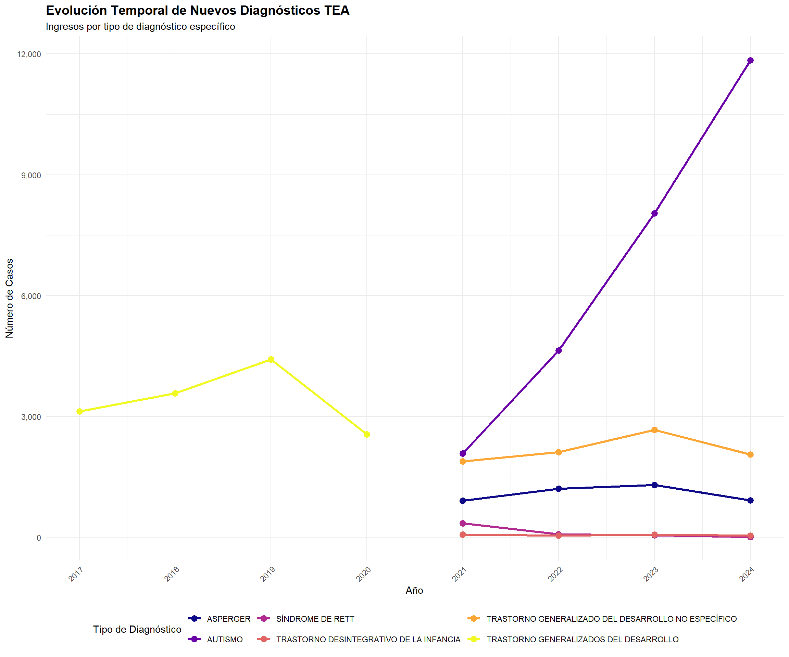
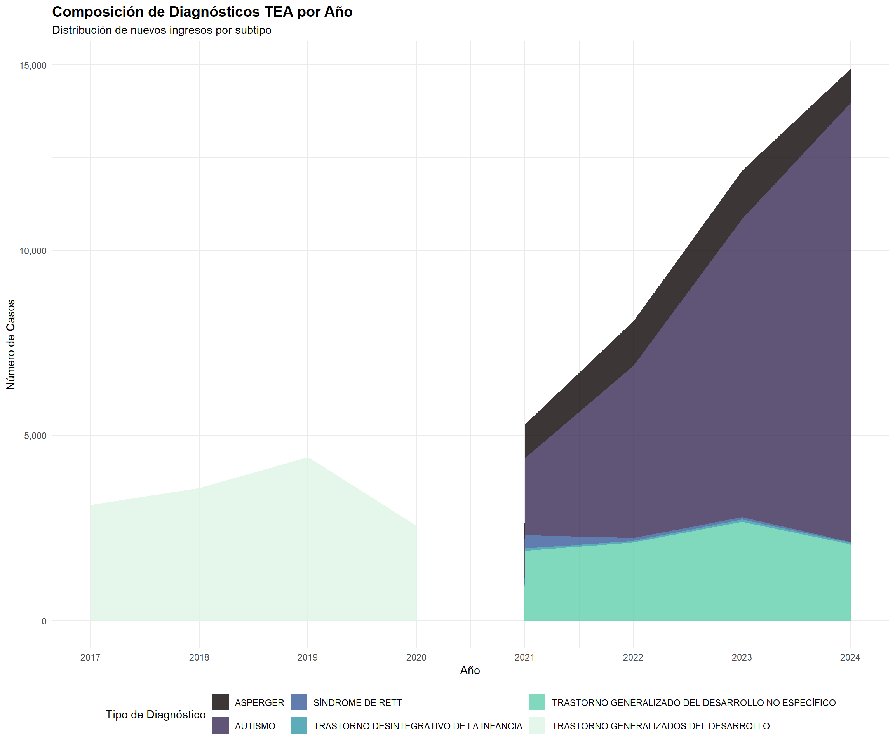
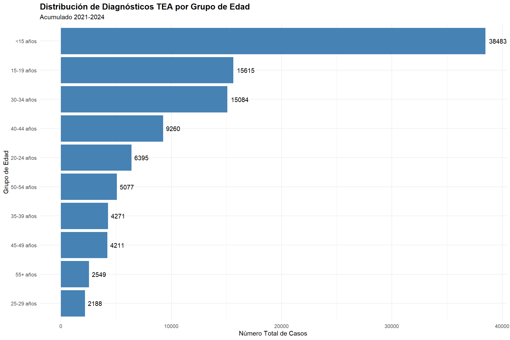
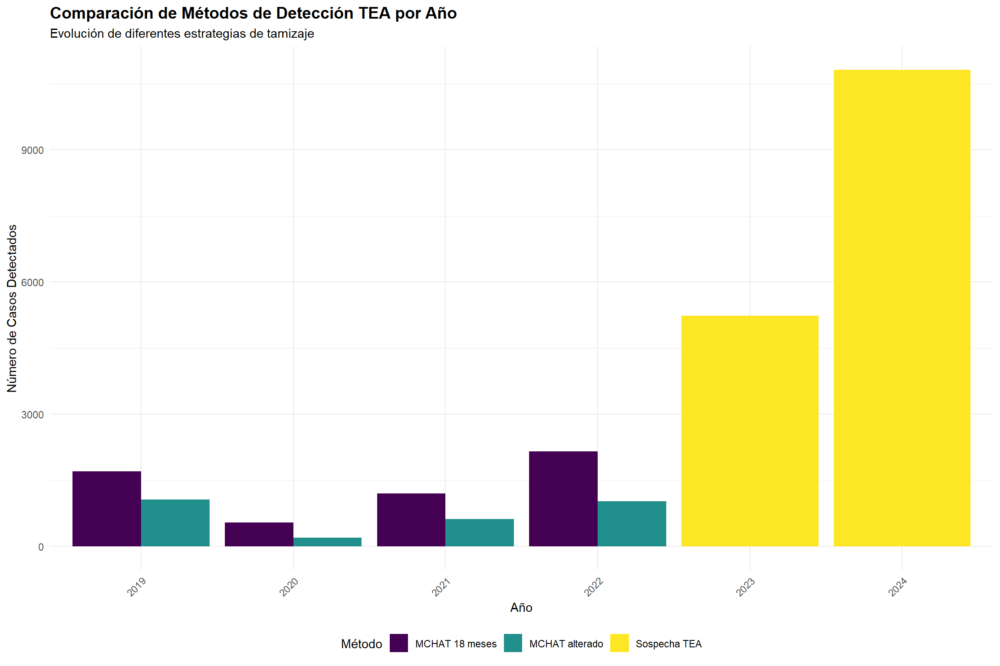

# Definición completa de códigos TEA por año según análisis previocodigos_tea <-list(# Diagnósticos genéricos (2017-2018)"06902600"=list(desc ="TRASTORNO GENERALIZADOS DEL DESARROLLO", hoja ="A05", tipo ="Diagnóstico", subtipo ="Ingresos", años =c(2017, 2018)),"05225000"=list(desc ="TRASTORNO GENERALIZADOS DEL DESARROLLO", hoja ="A05", tipo ="Diagnóstico", subtipo ="Egresos", años =c(2017, 2018)),# Tamizaje MCHAT (2019-2022)"03500406"=list(desc ="Niños/as con Tamizaje TEA (MCHAT) realizado con alteración 18 meses",hoja ="A03", tipo ="Tamizaje", subtipo ="MCHAT 18 meses", años =c(2019, 2020, 2021, 2022)),"03500407"=list(desc ="Niños/as con Tamizaje TEA (MCHAT) alterado en control",hoja ="A03", tipo ="Tamizaje", subtipo ="MCHAT alterado", años =c(2019, 2020, 2021, 2022)),# Diagnósticos específicos Ingresos (2021-2024)"05990022"=list(desc ="AUTISMO", hoja ="A05", tipo ="Diagnóstico", subtipo ="Ingresos", años =c(2021, 2022, 2023, 2024)),"05990023"=list(desc ="ASPERGER", hoja ="A05", tipo ="Diagnóstico", subtipo ="Ingresos", años =c(2021, 2022, 2023, 2024)),"05990024"=list(desc ="SÍNDROME DE RETT", hoja ="A05", tipo ="Diagnóstico", subtipo ="Ingresos", años =c(2021, 2022, 2023, 2024)),"05990025"=list(desc ="TRASTORNO DESINTEGRATIVO DE LA INFANCIA", hoja ="A05", tipo ="Diagnóstico", subtipo ="Ingresos", años =c(2021, 2022, 2023, 2024)),"05990026"=list(desc ="TRASTORNO GENERALIZADO DEL DESARROLLO NO ESPECÍFICO", hoja ="A05", tipo ="Diagnóstico", subtipo ="Ingresos", años =2024),# Diagnósticos específicos Egresos (2021-2024)"05990027"=list(desc ="AUTISMO", hoja ="A05", tipo ="Diagnóstico", subtipo ="Egresos", años =c(2021, 2022, 2023, 2024)),"05990028"=list(desc ="ASPERGER", hoja ="A05", tipo ="Diagnóstico", subtipo ="Egresos", años =c(2021, 2022, 2023, 2024)),"05990029"=list(desc ="SÍNDROME DE RETT", hoja ="A05", tipo ="Diagnóstico", subtipo ="Egresos", años =c(2021, 2022, 2023, 2024)),"05990030"=list(desc ="TRASTORNO DESINTEGRATIVO DE LA INFANCIA", hoja ="A05", tipo ="Diagnóstico", subtipo ="Egresos", años =c(2021, 2022, 2023, 2024)),"05990031"=list(desc ="TRASTORNO GENERALIZADO DEL DESARROLLO NO ESPECÍFICO", hoja ="A05", tipo ="Diagnóstico", subtipo ="Egresos", años =2024),# Sospecha TEA (2023-2024)"09600212"=list(desc ="Niños/as con sospecha del Espectro Autista en otros controles",hoja ="A03", tipo ="Tamizaje", subtipo ="Sospecha TEA", años =c(2023, 2024)),"03700105"=list(desc ="Niños/as con sospecha del Espectro Autista en otros controles",hoja ="A03", tipo ="Tamizaje", subtipo ="Sospecha TEA", años =2024),# Atención A28 (2023-2024)"29101629"=list(desc ="TRASTORNO ESPECTRO AUTISTA", hoja ="A28", tipo ="Atención", subtipo ="Consultas", años =c(2023, 2024)),"29101651"=list(desc ="TRASTORNO ESPECTRO AUTISTA", hoja ="A28", tipo ="Atención", subtipo ="Consultas", años =c(2023, 2024)))# Crear dataframe de códigos para referenciadf_codigos_tea <-bind_rows(lapply(names(codigos_tea), function(codigo) { info <- codigos_tea[[codigo]]data.frame(Codigo = codigo,Descripcion = info$desc,Hoja = info$hoja,Tipo = info$tipo,Subtipo = info$subtipo,Anos_Disponibles =paste(info$años, collapse =", "),stringsAsFactors =FALSE ) }))
3 Carga y Procesamiento de Datos
Código
# Definir la ruta de datosdata_path <-paste0(gsub("/docs", "", getwd()), "/Datos/")# Función para leer archivos REM con manejo de erroresleer_archivo_rem <-function(file_path) {tryCatch({# Determinar encoding según el año encoding <-ifelse(grepl("2024", file_path), "Latin-1", "UTF-8")# Leer el archivo dt <-fread( file_path, sep =";", encoding = encoding,dec =",",stringsAsFactors =FALSE,na.strings =c("", "NA", "-", ".") )# Limpiar nombres de columnassetnames(dt, names(dt), gsub("\\s+", "", names(dt)))# Agregar columna de año si no existeif(!"Año"%in%names(dt)) { año_archivo <-gsub(".*_(\\d{4}).*", "\\1", basename(file_path)) dt$Año <- año_archivo }return(dt) }, error =function(e) {warning(paste("Error leyendo archivo:", file_path, "\n", e$message))return(NULL) })}# Listar archivos REM Serie A disponiblesarchivos_serie_a <-list.files(path = data_path,pattern ="SerieA_.*\\.(txt|csv|CSV)$",full.names =TRUE,recursive =TRUE)# Cargar datos de Serie Alista_datos_a <-lapply(archivos_serie_a, leer_archivo_rem)names(lista_datos_a) <-gsub(".*_(\\d{4}).*", "\\1", basename(archivos_serie_a))lista_datos_a <- lista_datos_a[!sapply(lista_datos_a, is.null)]# Filtrar por códigos TEAlista_datos_tea <-lapply(lista_datos_a, function(dt) {if(!is.null(dt)) { dt[CodigoPrestacion %in%names(codigos_tea)] } else {NULL }})# Imprimir resumen de datos cargados# cat("Archivos Serie A cargados:", paste(names(lista_datos_a), collapse = ", "), "\n")# cat("Registros TEA encontrados por año:\n")# for(año in names(lista_datos_tea)) {# if(!is.null(lista_datos_tea[[año]])) {# n_registros <- nrow(lista_datos_tea[[año]])# if(n_registros > 0) {# cat(sprintf(" %s: %d registros\n", año, n_registros))# }# }# }
4 Análisis Nacional por Año
Código
# Función para procesar datos nacionalesprocesar_datos_nacional <-function(dt_list, codigos_info) { resultados_anuales <-list()for(año innames(dt_list)) { dt <- dt_list[[año]]if(!is.null(dt) &&nrow(dt) >0) {# Columnas a procesar según hoja columnas_numericas <-grep("^Col\\d+", names(dt), value =TRUE)# Convertir columnas a numéricofor(col in columnas_numericas) { dt[[col]] <-as.numeric(gsub(",", ".", gsub("\\.", "", dt[[col]]))) }# Agrupar por código resultado_año <- dt[, .(Total =sum(Col01, na.rm =TRUE),Col01 =sum(Col01, na.rm =TRUE),Col02 =sum(Col02, na.rm =TRUE),Col03 =sum(Col03, na.rm =TRUE),Col04 =sum(Col04, na.rm =TRUE),Col05 =sum(Col05, na.rm =TRUE),Col06 =sum(Col06, na.rm =TRUE),Col07 =sum(Col07, na.rm =TRUE),Col08 =sum(Col08, na.rm =TRUE),Col09 =sum(Col09, na.rm =TRUE),Col10 =sum(Col10, na.rm =TRUE),Col11 =sum(Col11, na.rm =TRUE) ), by = .(CodigoPrestacion)] resultado_año$Año <- año# Agregar información del código resultado_año <-merge( resultado_año, df_codigos_tea,by.x ="CodigoPrestacion",by.y ="Codigo",all.x =TRUE ) resultados_anuales[[año]] <- resultado_año } }# Combinar todos los años datos_nacionales <-rbindlist(resultados_anuales, use.names =TRUE, fill =TRUE)return(datos_nacionales)}# Procesar datos nacionalesdatos_nacionales <-procesar_datos_nacional(lista_datos_tea, codigos_tea)# Crear tabla resumen nacional por añotabla_resumen_nacional <- datos_nacionales %>%group_by(Año, Tipo, Subtipo) %>%summarise(Total_Casos =sum(Total, na.rm =TRUE),.groups ='drop' ) %>%pivot_wider(names_from =c(Tipo, Subtipo),values_from = Total_Casos,values_fill =0 ) %>%arrange(Año)# Mostrar tabla interactivaDT::datatable( tabla_resumen_nacional,caption ="Resumen Nacional de Casos TEA por Año, Tipo y Subtipo",extensions =c("Buttons", "FixedColumns"),options =list(dom ='Bfrtip',buttons =c('copy', 'csv', 'excel', 'pdf', 'print'),scrollX =TRUE,pageLength =25,columnDefs =list(list(className ='dt-center', targets ='_all') ),fixedColumns =list(leftColumns =1) )) %>%formatRound(columns =2:ncol(tabla_resumen_nacional), digits =0)
5 Evolución Temporal de Diagnósticos
Código
# Preparar datos para visualización temporaldatos_temporal <- datos_nacionales %>%filter(Tipo =="Diagnóstico", Subtipo =="Ingresos") %>%group_by(Año, Descripcion) %>%summarise(Total =sum(Total, na.rm =TRUE),.groups ='drop' ) %>%filter(Total >0)# Gráfico de evolución temporal por tipo de diagnósticop1 <-ggplot(datos_temporal, aes(x =as.numeric(Año), y = Total, color = Descripcion, group = Descripcion)) +geom_line(size =1.2) +geom_point(size =3) +scale_y_continuous(labels = scales::comma) +scale_x_continuous(breaks =unique(as.numeric(datos_temporal$Año))) +scale_color_viridis_d(option ="plasma") +labs(title ="Evolución Temporal de Nuevos Diagnósticos TEA",subtitle ="Ingresos por tipo de diagnóstico específico",x ="Año",y ="Número de Casos",color ="Tipo de Diagnóstico" ) +theme_minimal() +theme(plot.title =element_text(face ="bold", size =14),legend.position ="bottom",axis.text.x =element_text(angle =45, hjust =1) )print(p1)

Código
# Gráfico de áreas apiladas para mostrar composiciónp2 <-ggplot(datos_temporal, aes(x =as.numeric(Año), y = Total, fill = Descripcion)) +geom_area(position ="stack", alpha =0.8) +scale_y_continuous(labels = scales::comma) +scale_x_continuous(breaks =unique(as.numeric(datos_temporal$Año))) +scale_fill_viridis_d(option ="mako") +labs(title ="Composición de Diagnósticos TEA por Año",subtitle ="Distribución de nuevos ingresos por subtipo",x ="Año",y ="Número de Casos",fill ="Tipo de Diagnóstico" ) +theme_minimal() +theme(plot.title =element_text(face ="bold", size =14),legend.position ="bottom" )print(p2)

6 Análisis por Grupos de Edad (Hoja A05)
Código
# Procesar datos por edad para diagnósticos (A05)datos_edad <- datos_nacionales %>%filter(Hoja =="A05", Tipo =="Diagnóstico", Subtipo =="Ingresos") %>%select(Año, Descripcion, starts_with("Col")) %>%pivot_longer(cols =starts_with("Col"),names_to ="Columna",values_to ="Casos" ) %>%mutate(Grupo_Edad =case_when( Columna =="Col01"~"Total", Columna =="Col02"~"<15 años", Columna =="Col03"~"15-19 años", Columna =="Col04"~"20-24 años", Columna =="Col05"~"25-29 años", Columna =="Col06"~"30-34 años", Columna =="Col07"~"35-39 años", Columna =="Col08"~"40-44 años", Columna =="Col09"~"45-49 años", Columna =="Col10"~"50-54 años", Columna =="Col11"~"55+ años",TRUE~"Otro" ) ) %>%filter(Grupo_Edad !="Total", Grupo_Edad !="Otro", Casos >0)# Crear tabla resumen por grupo de edadtabla_edad <- datos_edad %>%group_by(Grupo_Edad, Descripcion) %>%summarise(Total_Casos =sum(Casos, na.rm =TRUE),.groups ='drop' ) %>%pivot_wider(names_from = Descripcion,values_from = Total_Casos,values_fill =0 ) %>%mutate(Total =rowSums(across(where(is.numeric)), na.rm =TRUE),Porcentaje =round(100* Total /sum(Total), 2) )# Mostrar tabla de distribución por edadDT::datatable( tabla_edad,caption ="Distribución de Diagnósticos TEA por Grupo de Edad (2021-2024)",options =list(pageLength =15,scrollX =TRUE )) %>%formatRound(columns =2:(ncol(tabla_edad)-1), digits =0) %>%formatStyle(columns ="Porcentaje",background =styleColorBar(tabla_edad$Porcentaje, 'lightblue'),backgroundSize ='100% 90%',backgroundRepeat ='no-repeat',backgroundPosition ='center' )
Código
# Gráfico de distribución por edadp_edad <-ggplot(datos_edad %>%group_by(Grupo_Edad) %>%summarise(Total =sum(Casos, na.rm =TRUE)),aes(x =reorder(Grupo_Edad, Total), y = Total)) +geom_bar(stat ="identity", fill ="steelblue") +geom_text(aes(label = Total), hjust =-0.2) +coord_flip() +labs(title ="Distribución de Diagnósticos TEA por Grupo de Edad",subtitle ="Acumulado 2021-2024",x ="Grupo de Edad",y ="Número Total de Casos" ) +theme_minimal() +theme(plot.title =element_text(face ="bold", size =14) )print(p_edad)

7 Análisis de Tamizaje y Detección Temprana
Código
# Filtrar datos de tamizaje (A03)datos_tamizaje <- datos_nacionales %>%filter(Hoja =="A03", Tipo =="Tamizaje") %>%group_by(Año, Subtipo, Descripcion) %>%summarise(Total_Tamizajes =sum(Total, na.rm =TRUE),Hombres =sum(Col01, na.rm =TRUE), # Col01 = Hombres en A03Mujeres =sum(Col02, na.rm =TRUE), # Col02 = Mujeres en A03.groups ='drop' ) %>%mutate(Razon_HM =round(Hombres / Mujeres, 2),Porcentaje_Hombres =round(100* Hombres / Total_Tamizajes, 1),Porcentaje_Mujeres =round(100* Mujeres / Total_Tamizajes, 1) )# Tabla de tamizaje por sexoDT::datatable( datos_tamizaje,caption ="Resultados de Tamizaje TEA por Sexo",extensions ="Buttons",options =list(dom ='Bfrtip',buttons =c('copy', 'csv', 'excel'),scrollX =TRUE )) %>%formatRound(columns =c("Razon_HM", "Porcentaje_Hombres", "Porcentaje_Mujeres"), digits =2) %>%formatStyle(columns ="Razon_HM",backgroundColor =styleInterval(c(2, 3, 4), c("#e8f4f8", "#b3d9e8", "#7fbdd8", "#4ba3c8")) )
Código
# Gráfico de razón Hombre:Mujer por añop_razon <- datos_tamizaje %>%filter(!is.na(Razon_HM), !is.infinite(Razon_HM)) %>%ggplot(aes(x =as.numeric(Año), y = Razon_HM, color = Subtipo, group = Subtipo)) +geom_line(size =1.2) +geom_point(size =3) +geom_hline(yintercept =3, linetype ="dashed", color ="red", alpha =0.5) +scale_x_continuous(breaks =unique(as.numeric(datos_tamizaje$Año))) +scale_color_viridis_d(option ="turbo") +labs(title ="Evolución de la Razón Hombre:Mujer en Tamizaje TEA",subtitle ="Línea roja punteada: Razón esperada 3:1",x ="Año",y ="Razón H:M",color ="Tipo de Tamizaje" ) +theme_minimal() +theme(plot.title =element_text(face ="bold", size =14),legend.position ="bottom" )print(p_razon)
Código
# Comparación de métodos de deteccióndatos_comparacion_metodos <- datos_nacionales %>%filter(Tipo =="Tamizaje") %>%group_by(Año, Subtipo) %>%summarise(Total =sum(Total, na.rm =TRUE),.groups ='drop' ) %>%filter(Total >0)p_metodos <-ggplot(datos_comparacion_metodos, aes(x = Año, y = Total, fill = Subtipo)) +geom_bar(stat ="identity", position ="dodge") +scale_fill_viridis_d(option ="viridis") +labs(title ="Comparación de Métodos de Detección TEA por Año",subtitle ="Evolución de diferentes estrategias de tamizaje",x ="Año",y ="Número de Casos Detectados",fill ="Método" ) +theme_minimal() +theme(plot.title =element_text(face ="bold", size =14),axis.text.x =element_text(angle =45, hjust =1),legend.position ="bottom" )print(p_metodos)

8 Cálculo de Tasas de Detección
Código
# Para calcular tasas necesitamos denominadores# Según el documento, para A03 podemos usar códigos internos del REM# Simulación de cálculo de tasas (requiere datos adicionales de controles)# Este es un ejemplo de estructura para cuando tengamos los denominadorescalcular_tasa_deteccion <-function(numerador_codigo, denominador_codigo, año) {# Esta función calculará la tasa cuando tengamos acceso a los denominadores# Por ahora, crear estructura ejemplo tasa_ejemplo <-data.frame( Año = año,Numerador = numerador_codigo,Denominador = denominador_codigo,Casos_Detectados =NA,Total_Evaluados =NA,Tasa_Deteccion =NA,stringsAsFactors =FALSE )return(tasa_ejemplo)}# Ejemplo de estructura de tasasestructura_tasas <-data.frame(Indicador =c("Tasa de Positividad MCHAT 18 meses","Tasa de Sospecha TEA en otros controles", "Incidencia de Autismo por 100,000 habitantes","Proporción Autismo vs otros TEA" ),Formula =c("(03500406 / 03500404) × 100","(09600212 / Total controles) × 100","(05990022 / Población INE) × 100,000","(05990022 / Suma todos TEA) × 100" ),Denominador_Requerido =c("03500404 - Total controles 18 meses","Total controles realizados","Población INE por grupo etario","Interno - suma de códigos TEA" ),stringsAsFactors =FALSE)kable(estructura_tasas, caption ="Estructura para Cálculo de Tasas TEA") %>%kable_styling(bootstrap_options =c("striped", "hover", "condensed"),full_width =FALSE) %>%column_spec(2, width ="30em")
Estructura para Cálculo de Tasas TEA
Indicador
Formula
Denominador_Requerido
Tasa de Positividad MCHAT 18 meses
(03500406 / 03500404) × 100
03500404 - Total controles 18 meses
Tasa de Sospecha TEA en otros controles
(09600212 / Total controles) × 100
Total controles realizados
Incidencia de Autismo por 100,000 habitantes
(05990022 / Población INE) × 100,000
Población INE por grupo etario
Proporción Autismo vs otros TEA
(05990022 / Suma todos TEA) × 100
Interno - suma de códigos TEA
9 Análisis de Transición y Cambios Metodológicos
Código
# Análisis de la transición metodológica en los códigostransicion_metodologica <-data.frame(Periodo =c("2017-2018", "2019-2020", "2021-2022", "2023-2024"),Caracteristica =c("TGD Genérico","Introducción MCHAT","Diagnósticos Específicos","MCHAT-RF + Múltiples vías" ),Codigos_Principales =c("06902600, 05225000","03500406, 03500407","05990022-05990030","09600212, 03700105, A28" ),Implicaciones =c("Sin especificidad diagnóstica","Tamizaje estandarizado 18 meses","Subtipos diferenciados (Autismo, Asperger, Rett, etc.)","Detección ampliada + seguimiento ambulatorio" ),stringsAsFactors =FALSE)kable(transicion_metodologica,caption ="Evolución Metodológica en el Registro de TEA (2017-2024)") %>%kable_styling(bootstrap_options =c("striped", "hover"),full_width =FALSE) %>%row_spec(0, bold =TRUE, background ="#2c3e50", color ="white") %>%column_spec(1, bold =TRUE) %>%column_spec(4, width ="25em")
Evolución Metodológica en el Registro de TEA (2017-2024)
# Visualización de la transición con diagrama Sankey/Alluvial# Preparar datos para diagrama alluvialdatos_flujo <- datos_nacionales %>%filter(Total >0) %>%mutate(Periodo =case_when( Año %in%c("2017", "2018") ~"2017-2018\nTGD Genérico", Año %in%c("2019", "2020") ~"2019-2020\nMCHAT", Año %in%c("2021", "2022") ~"2021-2022\nDiagnósticos\nEspecíficos", Año %in%c("2023", "2024") ~"2023-2024\nMúltiples Vías" ),Categoria =paste(Tipo, "-", Subtipo) ) %>%group_by(Periodo, Categoria) %>%summarise(Frecuencia =sum(Total, na.rm =TRUE),.groups ='drop' )# Opción 1: Gráfico de barras agrupadas (más simple y efectivo)p_transicion <-ggplot(datos_flujo,aes(x = Periodo, y = Frecuencia, fill = Categoria)) +geom_bar(stat ="identity", position ="stack") +scale_fill_viridis_d(option ="turbo", alpha =0.8) +labs(title ="Flujo de Cambios Metodológicos en Registro TEA",subtitle ="Evolución de códigos y métodos de registro 2017-2024",x ="Periodo",y ="Número de Casos",fill ="Categoría" ) +theme_minimal() +theme(plot.title =element_text(face ="bold", size =14),axis.text.x =element_text(angle =0, hjust =0.5, size =10),legend.position ="bottom" ) +guides(fill =guide_legend(ncol =2))print(p_transicion)
10 Análisis de Proporción por Subtipo Diagnóstico
Código
# Analizar la proporción de cada subtipo de TEAdatos_subtipos <- datos_nacionales %>%filter(Tipo =="Diagnóstico", Subtipo =="Ingresos", Año %in%c("2021", "2022", "2023", "2024")) %>%group_by(Descripcion) %>%summarise(Total_Casos =sum(Total, na.rm =TRUE),.groups ='drop' ) %>%mutate(Porcentaje =round(100* Total_Casos /sum(Total_Casos), 2) ) %>%arrange(desc(Total_Casos))# Gráfico de pastel/donut para proporcionesp_donut <-ggplot(datos_subtipos, aes(x =2, y = Total_Casos, fill = Descripcion)) +geom_bar(stat ="identity", width =1) +coord_polar(theta ="y") +xlim(0.5, 2.5) +scale_fill_viridis_d(option ="plasma") +theme_void() +theme(legend.position ="right",plot.title =element_text(face ="bold", size =14, hjust =0.5) ) +labs(title ="Distribución de Subtipos de TEA (2021-2024)",fill ="Subtipo" ) +geom_text(aes(label =paste0(Porcentaje, "%")),position =position_stack(vjust =0.5),color ="white", size =4, fontface ="bold")print(p_donut)
Código
# Tabla de proporcionesDT::datatable( datos_subtipos,caption ="Proporción de Subtipos de TEA en Nuevos Diagnósticos",options =list(pageLength =10,dom ='t' )) %>%formatRound(columns =c("Porcentaje"), digits =2) %>%formatStyle(columns ="Total_Casos",background =styleColorBar(datos_subtipos$Total_Casos, '#3498db'),backgroundSize ='100% 90%',backgroundRepeat ='no-repeat',backgroundPosition ='center' )
11 Análisis Regional (si hay datos disponibles)
Código
# Preparar estructura para análisis regional# Este análisis requiere datos con desagregación por región# Función para procesar datos regionales cuando estén disponiblesprocesar_datos_regionales <-function(dt_list) {# Verificar si hay columna de región/comuna muestra <- dt_list[[1]]if(!is.null(muestra) && ("IdRegion"%in%names(muestra) ||"IdComuna"%in%names(muestra))) {# Procesar por región o comuna datos_region <-rbindlist(lapply(names(dt_list), function(año) { dt <- dt_list[[año]]if(!is.null(dt) &&nrow(dt) >0) {# Convertir columnas a numérico antes de procesar columnas_numericas <-grep("^Col\\d+", names(dt), value =TRUE)for(col in columnas_numericas) {# Limpiar y convertir a numérico dt[[col]] <-as.numeric(gsub(",", ".", gsub("\\.", "", as.character(dt[[col]])))) }# Determinar columna de agrupaciónif("IdRegion"%in%names(dt)) { grupo_col <-"IdRegion"# Asegurar que IdRegion sea character dt$IdRegion <-as.character(dt$IdRegion) } elseif("IdComuna"%in%names(dt)) {# Extraer región de la comuna (primeros 2 dígitos) dt$IdRegion <-substr(as.character(dt$IdComuna), 1, 2) grupo_col <-"IdRegion" } else {return(NULL) }# Agrupar y sumar resultado <- dt %>%group_by(!!sym(grupo_col)) %>%summarise(Total =sum(Col01, na.rm =TRUE),Total_Hombres =if("Col01"%in% columnas_numericas &any(grepl("A03", dt$IdSeccion, ignore.case =TRUE))) sum(Col01, na.rm =TRUE) elseNA,Total_Mujeres =if("Col02"%in% columnas_numericas &any(grepl("A03", dt$IdSeccion, ignore.case =TRUE))) sum(Col02, na.rm =TRUE) elseNA, Año = año,.groups ='drop' )return(resultado) } }) )# Asegurar que IdRegion sea character para el joinif(!is.null(datos_region) &&nrow(datos_region) >0) { datos_region$IdRegion <-as.character(datos_region$IdRegion)# Si IdRegion es un número sin cero inicial, agregar el cero datos_region$IdRegion <-ifelse(nchar(datos_region$IdRegion) ==1,paste0("0", datos_region$IdRegion), datos_region$IdRegion ) }# Agregar nombres de regiones regiones_chile <-data.frame(IdRegion =c("01", "02", "03", "04", "05", "06", "07", "08", "09", "10", "11", "12", "13", "14", "15", "16"),NombreRegion =c("Tarapacá", "Antofagasta", "Atacama", "Coquimbo", "Valparaíso", "O'Higgins", "Maule", "Biobío", "La Araucanía", "Los Lagos", "Aysén", "Magallanes", "Metropolitana", "Los Ríos", "Arica y Parinacota", "Ñuble"),stringsAsFactors =FALSE )# Unir con nombres de regiones datos_region <- datos_region %>%left_join(regiones_chile, by ="IdRegion") %>%filter(!is.na(Total)) # Cambiar filtro para mantener datos aunque no tenga nombre# Si no hay nombres, usar el códigoif("NombreRegion"%in%names(datos_region)) { datos_region$NombreRegion <-ifelse(is.na(datos_region$NombreRegion),paste("Región", datos_region$IdRegion), datos_region$NombreRegion ) } else { datos_region$NombreRegion <-paste("Región", datos_region$IdRegion) }return(datos_region) } else {return(NULL) }}# Intentar procesar datos regionalesdatos_regionales <-procesar_datos_regionales(lista_datos_tea)if(!is.null(datos_regionales) &&nrow(datos_regionales) >0) {# Crear visualización regional p_regional <-ggplot(datos_regionales, aes(x =reorder(NombreRegion, Total), y = Total, fill = Año)) +geom_bar(stat ="identity", position ="dodge") +coord_flip() +scale_fill_viridis_d(option ="viridis") +labs(title ="Distribución Regional de Casos TEA",subtitle ="Por región y año",x ="Región",y ="Número de Casos",fill ="Año" ) +theme_minimal() +theme(plot.title =element_text(face ="bold", size =14),axis.text =element_text(size =10) )print(p_regional)# Tabla resumen regional tabla_regional <- datos_regionales %>%group_by(NombreRegion) %>%summarise(Total_Periodo =sum(Total, na.rm =TRUE),Promedio_Anual =round(mean(Total, na.rm =TRUE), 1), Años_con_Datos =n_distinct(Año),.groups ='drop' ) %>%arrange(desc(Total_Periodo)) DT::datatable( tabla_regional,caption ="Resumen Regional de Casos TEA",options =list(pageLength =16,scrollX =TRUE ) ) %>%formatRound(columns =c("Promedio_Anual"), digits =1) %>%formatStyle(columns ="Total_Periodo",background =styleColorBar(tabla_regional$Total_Periodo, 'lightblue'),backgroundSize ='100% 90%',backgroundRepeat ='no-repeat',backgroundPosition ='center' )} else {cat("No hay datos regionales disponibles en los archivos cargados.\n")cat("Para análisis regional, se requiere la columna IdRegion o IdComuna en los datos REM.\n")# Mostrar qué columnas están disponibles para diagnósticoif(length(lista_datos_tea) >0&&!is.null(lista_datos_tea[[1]])) {cat("\nColumnas disponibles en los datos:\n")print(names(lista_datos_tea[[1]])) }}
# Crear tabla de recomendaciones basadas en el análisisrecomendaciones <-data.frame(Aspecto =c("Códigos para Serie Temporal","Período de Análisis","Cálculo de Tasas","Análisis por Sexo","Comparabilidad","Denominadores" ),Recomendacion =c("Usar códigos 05990022-05990030 para período 2021-2024 (diagnósticos específicos)","Analizar períodos por separado: 2017-2020 (genérico) vs 2021-2024 (específico)","Para tasas de detección, usar códigos internos REM (03500404 para controles 18 meses)","Priorizar datos de Hoja A03 que incluye desagregación por sexo","No comparar directamente TGD genérico (2017-2018) con diagnósticos específicos (2021+)","Para incidencia poblacional, obtener datos INE por grupo etario y región" ),Justificacion =c("Mayor estabilidad y especificidad diagnóstica en este período","Cambios metodológicos significativos impiden comparación directa","Denominadores internos más precisos que estimaciones poblacionales","Hoja A05 no incluye desagregación por sexo","Diferencias en definiciones y criterios de inclusión","Necesario para calcular tasas por 100,000 habitantes" ),stringsAsFactors =FALSE)kable(recomendaciones,caption ="Recomendaciones para Análisis Longitudinal de TEA") %>%kable_styling(bootstrap_options =c("striped", "hover"),full_width =FALSE) %>%row_spec(0, bold =TRUE, background ="#2c3e50", color ="white") %>%column_spec(2, width ="25em") %>%column_spec(3, width ="25em")
Recomendaciones para Análisis Longitudinal de TEA
Aspecto
Recomendacion
Justificacion
Códigos para Serie Temporal
Usar códigos 05990022-05990030 para período 2021-2024 (diagnósticos específicos)
Mayor estabilidad y especificidad diagnóstica en este período
Período de Análisis
Analizar períodos por separado: 2017-2020 (genérico) vs 2021-2024 (específico)
![]()